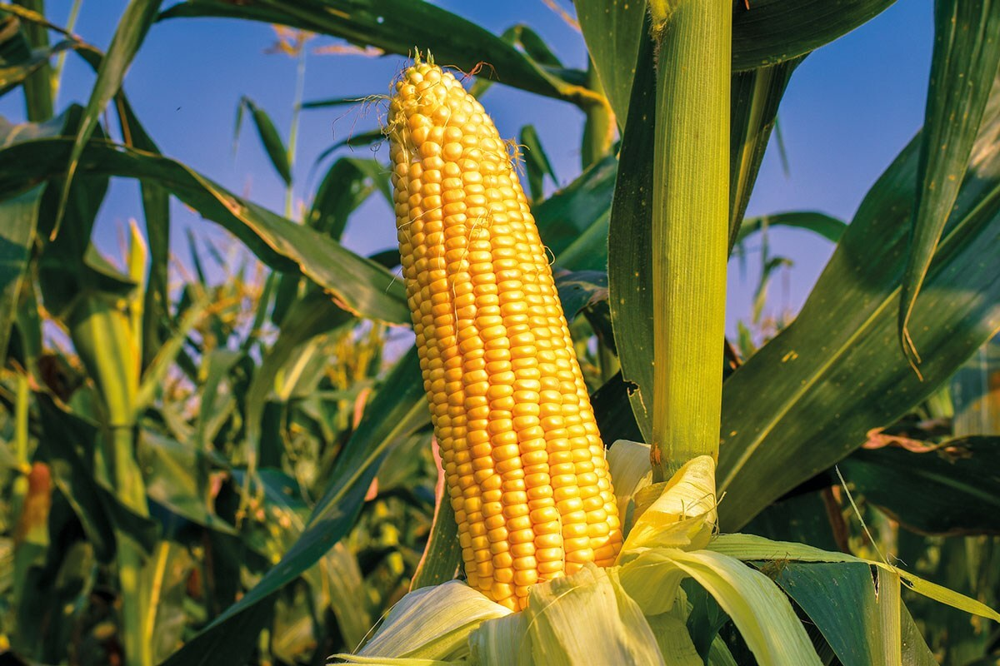

Em 2021, o estado do Paraná foi o maior produtor de milho no Brasil, com uma produção estimada em cerca de 13,7 milhões de toneladas, segundo dados do Instituto Brasileiro de Geografia e Estatística (IBGE).
Este número pode variar de ano para ano dependendo das condições climáticas e outras variáveis agrícolas
O consumo mundial de milho varia de ano para ano, mas em termos gerais, a demanda global por milho é bastante alta devido aos seus diversos usos na alimentação humana, animal e na indústria.
Para fornecer uma estimativa aproximada, em 2020, o consumo global de milho foi de cerca de 1,17 bilhão de toneladas, de acordo com dados da Organização das Nações Unidas para Alimentação e Agricultura (FAO).
Esse número pode variar ligeiramente a cada ano, dependendo de vários fatores econômicos, climáticos e de mercado.